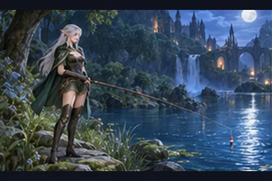
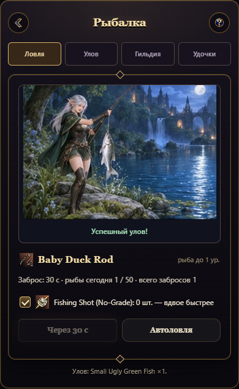
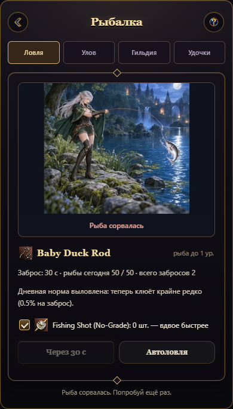
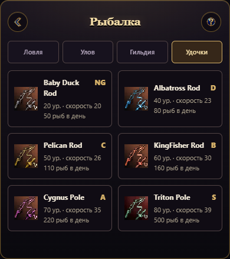

Анимация WebP

Каждый повтор чередует успех и неудачу, чтобы показать оба состояния.
Ловля, улов, Гильдия и удочки показаны отдельно. Кнопка информации объясняет, где купить снаряжение, и открывает Рыбака. В игре исход берётся из ответа сервера.

Каждый повтор чередует успех и неудачу, чтобы показать оба состояния.


